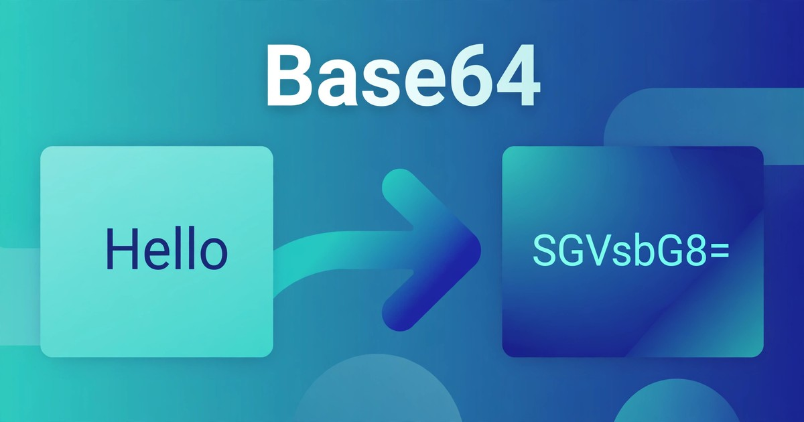

How to Encode and Decode Base64 Online
Turn text or files into Base64 — and Base64 back into readable text or a file — in seconds, without signing up anywhere.
October 29, 2026 · 6 min read

Sooner or later, everyone meets a string like SGVsbG8sIFdvcmxkIQ==. It looks like gibberish, but it is the words "Hello, World!" in Base64. Base64 shows up in email attachments, data URLs, configuration files, and API responses — anywhere binary data must travel through a system that only handles plain text safely.
Converting in either direction takes seconds, with nothing to install and no account to create. This guide shows you how, explains the maths, and flags the commonest mistakes.
What Base64 actually does
Base64 represents binary data using only 64 safe text characters: the upper-case letters A–Z, the lower-case letters a–z, the digits 0–9, plus "+" and "/". The "=" sign is used only as padding at the end, explained below. With no control characters or line breaks in the output, binary data survives the journey intact.
Each Base64 character carries 6 bits. Three input bytes hold 24 bits, which split neatly into four 6-bit groups — so every 3 bytes become exactly 4 characters. That is why output is always about a third larger than the input. It is a transport format, not compression, and definitely not encryption: anyone with a Base64 tool can decode your string with no key and no password. Never use it to hide a password, a token, or anything genuinely secret.
The Base64 Encoder/Decoder handles both directions and both kinds of input. Text mode is selected by default: type text to encode it, or paste Base64 to decode it, with full Unicode support, so emojis and non-English text work too. File mode encodes a whole file, or decodes pasted Base64 back into a downloadable file. Everything runs locally in your browser — nothing is uploaded to a server.
Encode or decode text in 4 steps
- Open the Base64 Encoder/Decoder — Text mode is already selected, so there is nothing to set up first.
- Type or paste into the "Text or Base64 input" box — plain text to encode, or the Base64 string exactly as received, padding included, to decode.
- Click Encode or Decode. Encode turns your text into Base64; Decode turns Base64 back into readable text. The result appears under "RESULT".
- Click Copy result and paste the output wherever you need it.
Encode or decode a file in 4 steps
- Switch to File mode and choose a file under "Choose a file to encode" — it is read locally, never uploaded.
- Click "Encode file to Base64". The encoded output appears under "BASE64 OUTPUT".
- Click "Download as .txt" if you want to save the encoded text as a file.
- To reverse it, paste Base64 into the file-decoding section, set the output filename (it starts as "decoded-file.bin" — use the original type, e.g. "photo.png"), then click "Decode & download file".
A worked example: "Hello" becomes "SGVsbG8="
Take "Hello": 5 bytes. The first 3 bytes become 4 Base64 characters, and the remaining 2 bytes become 3 characters plus one "=" pad, giving 8 in total: SGVsbG8=. Decode it and you get "Hello" back, exactly.
The same pattern holds for "Hello, World!" (13 bytes). Twelve bytes form four complete groups of 3, producing 16 characters; the one leftover byte produces 2 characters plus two "=" padding characters, for 20 in total: SGVsbG8sIFdvcmxkIQ==. The padding rule is simple: 1 byte left over gives "==", 2 bytes left over give "=", and an exact multiple of 3 gives no padding.
- "Man" (3 bytes): divides exactly by 3 → TWFu (4 characters, no padding).
- "Ma" (2 bytes): 2 bytes left over → TWE= (3 characters plus one "=").
- "M" (1 byte): 1 byte left over → TQ== (2 characters plus two "=").
How much bigger does Base64 make things?
Every 3 bytes become 4 characters, so output size is the input size × 4 ÷ 3, rounded up to a multiple of 4:
- 3 bytes become 4 characters (1 extra character).
- 30 bytes become 40 characters (10 extra).
- 1,500 bytes become 2,000 characters (500 extra).
- 3,000 bytes become 4,000 characters (1,000 extra).
That overhead matters before embedding a large file as Base64: a 3 MB image becomes about 4 MB of text. For short strings and config values it is negligible; for large files, a direct attachment is usually better.
Base64 compared with other ways of representing data
- Plain text: readable as-is, but cannot safely carry binary data — control characters and non-text bytes get corrupted in transit.
- Hexadecimal: also reversible and text-safe, but every byte becomes 2 characters, so output is twice the input size.
- Base64: text-safe, reversible by anyone, and only about a third larger — the standard choice when binary data must travel as text.
- Encryption: genuinely hides meaning, but needs a key to reverse. Base64 needs no key — which is exactly why it hides nothing.
5 mistakes that break a Base64 conversion
- Treating Base64 as security. Encoding a password or API key in Base64 does not protect it — anyone can decode it in one click. If it must stay secret, encrypt it properly.
- Deleting the "=" padding. Padding tells the decoder how many bytes the last group really held. Strip the "=" signs and decoding may fail or add garbage bytes. Always copy the full output.
- Copying broken lines from an email. Mail programs often wrap long Base64 strings across lines. Join them back into one unbroken line and remove stray spaces before decoding.
- Mixing up standard and URL-safe Base64. Standard Base64 uses "+" and "/", which have special meanings in a web address. Some systems use a URL-safe variant swapping them for "-" and "_". Check which variant the receiving system expects — the two are not interchangeable.
- Encoding twice by accident. Encoding an already-encoded string gives a longer string that decodes to Base64, not to your original text. If decoded output still looks like gibberish, you probably encoded twice — decode once more.
Frequently asked questions
What is Base64 encoding?
A method of representing binary data as plain text, using 64 safe characters (A–Z, a–z, 0–9, "+" and "/"). It lets binary data travel through text-only systems — email, web forms, config files — without corruption.
Is Base64 encryption?
No. Base64 is fully reversible by anyone, with no key or password — designed for safe transport, not secrecy. Never encode a password, token, or private key in it and assume it is protected.
Why is Base64 output longer than the input?
Each output character carries only 6 bits, while each input byte carries 8. Three bytes (24 bits) become four characters, so output runs about a third larger — 3,000 bytes become 4,000 characters.
Why does my Base64 string end with "=" signs?
The "=" signs are padding, appearing when the input length does not divide evenly by 3: one leftover byte gives "==", two give "=". They tell the decoder how many real bytes the final group holds — keep them when copying.
Are my files uploaded when I use the tool?
No. The Base64 Encoder/Decoder runs entirely in your browser — your text and files never leave your device.
Related tools: Base64 Encoder/Decoder · JSON Formatter · URL Encoder/Decoder · HTML Encoder/Decoder · JWT Decoder